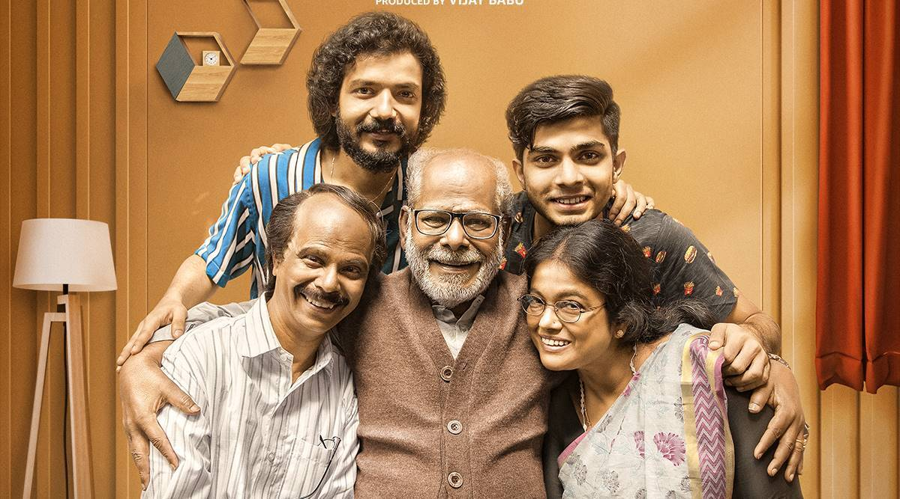
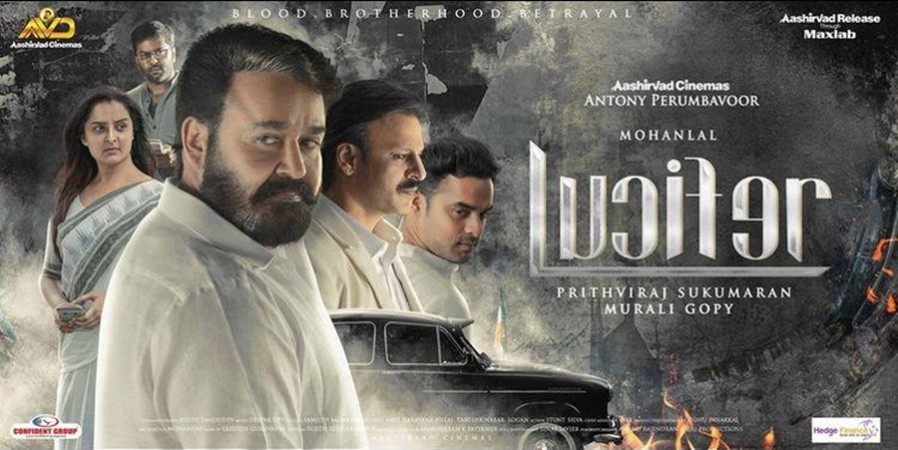

Home
A technologically challenged dad desperately tries to reconnect with his young sons and communicate as they
grow up and become active on social media.
Release Date:19 August 2021
Director:Rojin Thomas
Cast:Indrans,Sreenath Bhasi
Language:Malayalam
Rating IMDb:9.1/10

Lucifer
A major power struggle occurs when the leader of a political party passes away. In the midst of the chaos, a
mysterious man named Stephen steps in to ascend the throne.
Release Date:28 March 2019
Director:Prithviraj Sukumaran
Cast:Mohanlal,Manju Warrier
Language:Malayalam
Rating IMDb:7.5/10
Drishyam 2
Georgekutty, a cinema hall owner, thrives in life but is a changed man. However, when his family gets
entangled in a criminal investigation, he must protect them from the legal institution yet again.
Release Date:19 February 2021
Director:Jeethu Joseph
Cast:Mohanlal,Meena,Siddique
Language:Malayalam
Rating IMDb:8.6/10
Cold Case
When a skull is found in a discarded package, ACP Sathyajith is tasked with identifying the victim and
finding the killer. Parallelly, a journalist is haunted by a spirit and investigates it.
Release Date:30 June 2021
Director:Tanu Balak
Cast:Prithviraj Sukumaran,Lakshmipriya
Language:Malayalam
Rating IMDb:6.1/10

The Priest
Father Carmen, a priest, joins hands with the police to investigate a series of mysterious suicides.
However, he soon stumbles upon a disturbing fact that has serious consequences.
Release Date:11 March 2021
Director:Jofin T.Chacko
Cast:Mammootty,Nikhila Vimal,Manju Warrier
Language:Malayalam
Rating IMDb:6.5/10